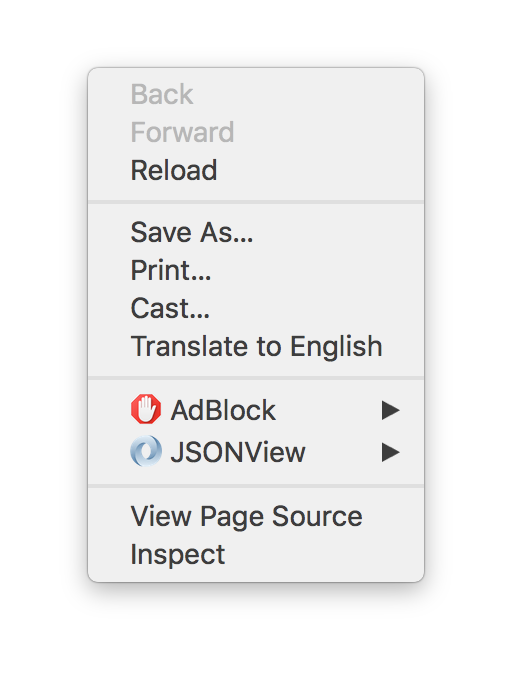
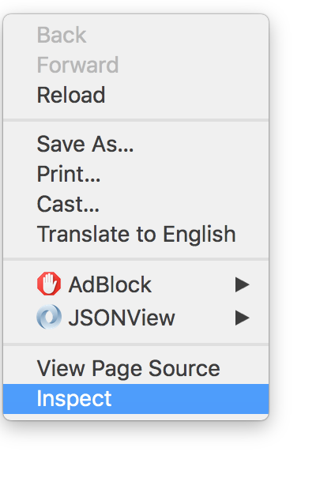
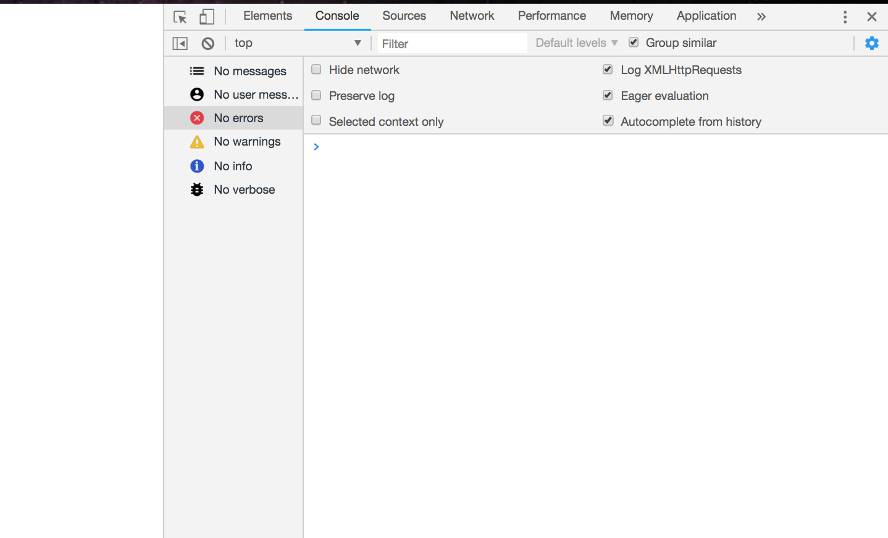
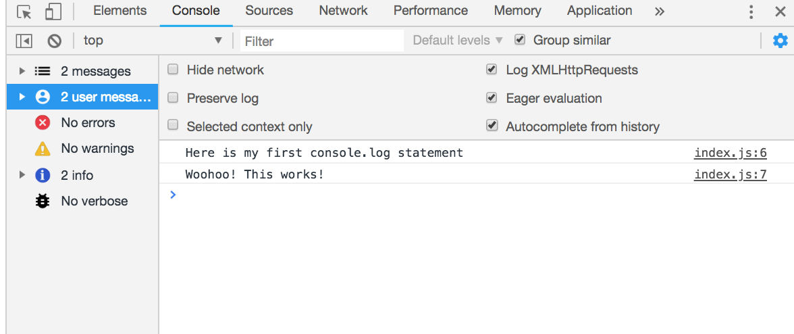

What is the Console.log function?
Description :
The console.log() function is used to log what we want on the browser console.
You can think of this as being similar to "System.out.println()" in Java or
"print" in Python. To view the statements you log, you can "Right Click" on your Browser
and click on "Inspect". Then click on the Console tab and what you printed onto
your log should be visible here!
This is often a great strategy when debugging to know if our JS script
is executing properly.
Syntax to log on the console (JS) :
console.log("message_to_log");
Exercise :
Message successfully logged on the console!
Here are the steps to view your print statements on the console
- Right click on your browser (in this case Chrome) 
- Click on inspect 
- Click on the Console Tab on the Inspect screen that opens up 
- You should see the the things you logged on the Console 